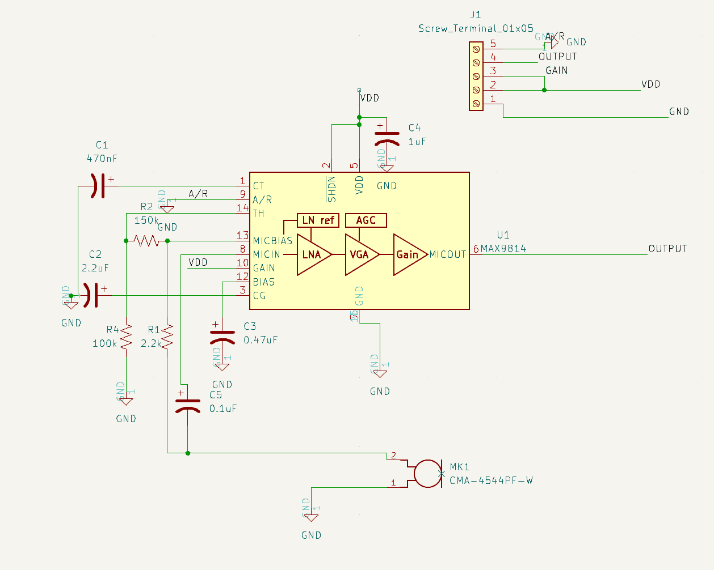
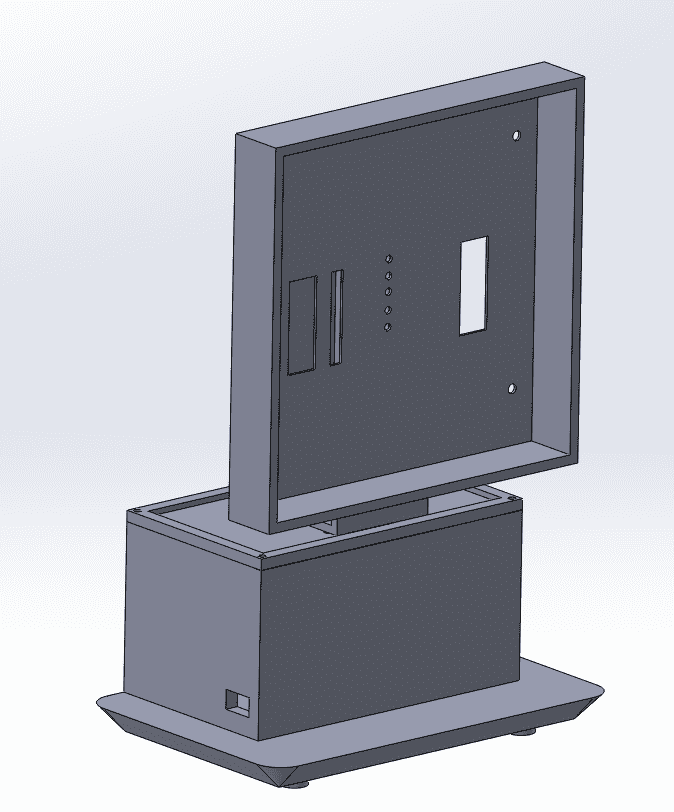
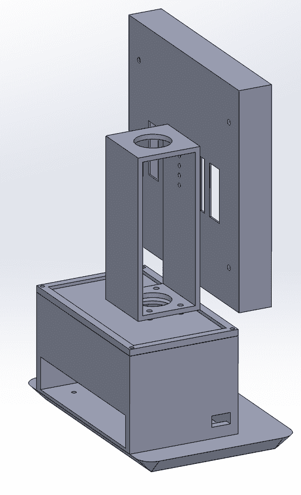

Tritone
ECE 196: Audio To Color Array Conversion
James Han, Uriberto Lopez, Alexis Pascual
Problem Definition
Concerts only using auditory information aren’t accessible to the hearing impaired. Relying on an interpreter or feeling the vibrations through the ground becomes impossible for some settings.
System Diagram
Our System Diagram begins by receiving audio input from the various microphones throughout the device and sends it to the teensy audio shield. The audio shield process these signals and turns them from analog to digital for the Teensy 3.6 board to process. Here, the signal is recorded in chunks. The data captured by the Teensy is given to the ESP32 where a machine learning algorithm will be applied to the data collected. We take 11 inputs; 10 dominant frequencies taken from each seconf for the last 10 seconds and the current dominant frequency and pass it through a two hidden layer, 16 parameter feed forward network to output 3 values: r,g,b. The model training was accomplished by collecting data by James and self-labeling.
Hypothesis
Research Plan 1:
Have hearing impaired people listen to a song with a video of people performing in front of green screen.
Research Plan 2:
Have someone wear earplugs/headphones and try to guess the genre of the song based on the LED projection.
Timeline
Week 4
In week 4, we began finalizing our idea and gathering items to execute this project. Around this time, we experiment with the Teensy audio shield and Teensy 3.6 board capturing singals from a microphone. These signals were captured in real time and displayed the frequency and amplitude.
Week 5
In week 5, we design the pcb that we would use for our project. In more detail, we designed an Audio Gain Control board that would amplify distant signals so that they could be recieved better. The process to design this was hugely inspired by DigiKeys design. The board was designed in KiCad and used the various libraries in it. In this week, we also ordered our materials we needed to complete this project. So, instead of building our own RGB Matrix LED board, we ordered one.
Week 6
During Week 6, we received our RGB Matrix LED board from Adafruit and began to play around with it. James and Alexis were able to display a simple spectogram from the signals being recorded. The images below show the code from the initial attempt to record these signals and also the display demonstrating the result.
Week 7
After debating whether or not to use the ESP32 in conjuction with the Teensy boards, James began to program the code for real time frequency detection. His goal was to integrate the ESP32 with the Teensy board to alleviate the workload of the Teensy board. Also during Week 7 we began to design the initial enclosure. Our initial idea was to make the stand more dynamic. This meant that we would use a servo that could move the upper part of the stand.
Week 8
In Week 8, the team began to 3D print the enclosure designed by Uri at Envision. The initial prototype included a servo module that would rotate and listen its surroundings for music. So, the parts for this first protoype were printed. Also, we received our pcb but because the parts for our pcb didn't come in time we decided to instead use the one connected to the Teensy Audio Shield and another one directly conncted to the Teensy board.
Week 9
Week 9 was the week when we made edits to the initial enclosure design. Comparing to the original, many apects of it were removed to make a feasable product. The CAD designs also had to be edited because of mismeasurements; for example, we 3D printed a new display case because the we had to account for the wiring of the RGB display and another edit was the electronics box which had to be made taller to house the wiring connecting the boards.
 Week 10
In week 10, the concluding week, we started off by presenting our final product to the class and instructors. Other than watching and listening to other groups, we worked on completeing our project website.